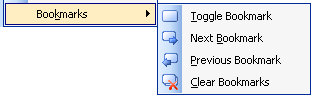
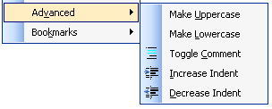
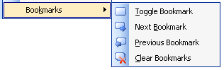
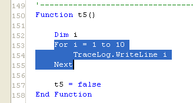
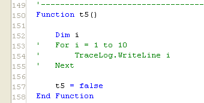
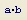
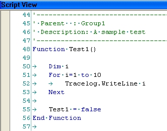

The Edit Toolbar contains functions to help you edit your text in the Script/Globals View of a test program or a text file. The Edit menu contains some of the items that are found in the Edit Toolbar. The Edit menu and toolbar are only visible when there is at least one document open.
|
|
  |

| Clear Bookmarks |
Removes all bookmarks
 in the currently
selected document. If a test program is the current document, the
bookmarks will not be cleared from both the Test View and the Globals View, but
rather only from the view that is visible.
in the currently
selected document. If a test program is the current document, the
bookmarks will not be cleared from both the Test View and the Globals View, but
rather only from the view that is visible.
| Copy |
Places a copy of the selected text in the editor on the clipboard. Shortcut key is Ctrl+C.
| Cut |
Removes the currently selected text from the editor and places it on the clipboard. Shortcut key is Ctrl+X.
| Decrease Indent |
Moves the line of text at the current cursor location to the left by one tab width.
| Delete |
Deletes the currently selected text in the editor. Shortcut key is Delete.
| Find |
Finds occurrences of the specified string in the specified context. The Find and Replace dialog is displayed as shown below. Enter the word to find in the text box. Optionally check Match case and/or Match whole word to narrow down the search. From the Look in drop down list, select the scope of the search: Current document, Current selection or All open files (current test program only). After the search parameters have been set, click Find Next to find the first occurrence of the string. If found, the search stops and the string is highlighted. You may continue to click Find Next to find all additional occurrences until the starting point is reached. Once the dialog is closed, press the F3 key to continue finding the next occurrence of the last string that was searched for. To perform a replace, click the replace button in the dialog's toolbar to view the Replace options. Shortcut key is Ctrl+F.

| Font |
Opens a font dialog to set the font for the current editor. The default font is Courier New size 10. This font selection applies to the entire document in the editor.
| Increase Indent |
Moves the line of text at the current cursor location to the right by one tab width.
Converts each character in the currently selected text to its lowercase equivalent.
Converts each character in the currently selected text to its uppercase equivalent.
| Next Bookmark |
Moves the cursor to the next bookmark
 in the current
editor.
in the current
editor.
| Paste |
Inserts the text on the clipboard from a previous copy or cut at the cursor in the current editor. Shortcut key is Ctrl+V.
| Previous Bookmark |
Moves the cursor to the previous bookmark
 in the current
editor.
in the current
editor.
| Redo |
Redo the last action that was undone. Shortcut key is Ctrl+Y.
Selects all the text in the current editor. Shortcut key is Ctrl+A.
| Toggle Bookmark |
Inserts or removes a bookmark  in the editor at the line where the cursor is
located. Use a bookmark to mark a line of code so that you may quickly
navigate back to it in the future.
in the editor at the line where the cursor is
located. Use a bookmark to mark a line of code so that you may quickly
navigate back to it in the future.
| Toggle Comment |
If the currently selected lines in the editor begin with a VBScript comment character, the comment characters are removed. If the currently selected lines do not begin with a comment character, a comment character is inserted at the beginning of each line.
Example:
| Select the code to comment: | After clicking the toggle comment button, the selected lines are commented: |
|  |  |
| Undo |
Undo the last action. Shortcut key is Ctrl+Z.
| Whitespace |  |
Show all whitespace (spaces and tabs) in the current editor. A space is denoted with a '·' and a tab is denoted with an arrow as shown in the example below.

Astronics Test Systems
Last updated on 2/20/07 by L. Anhalt